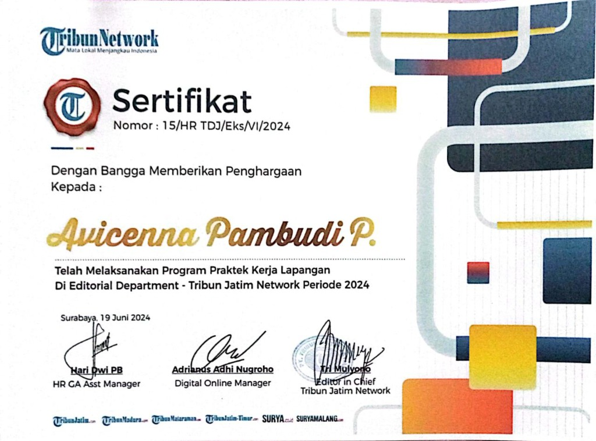
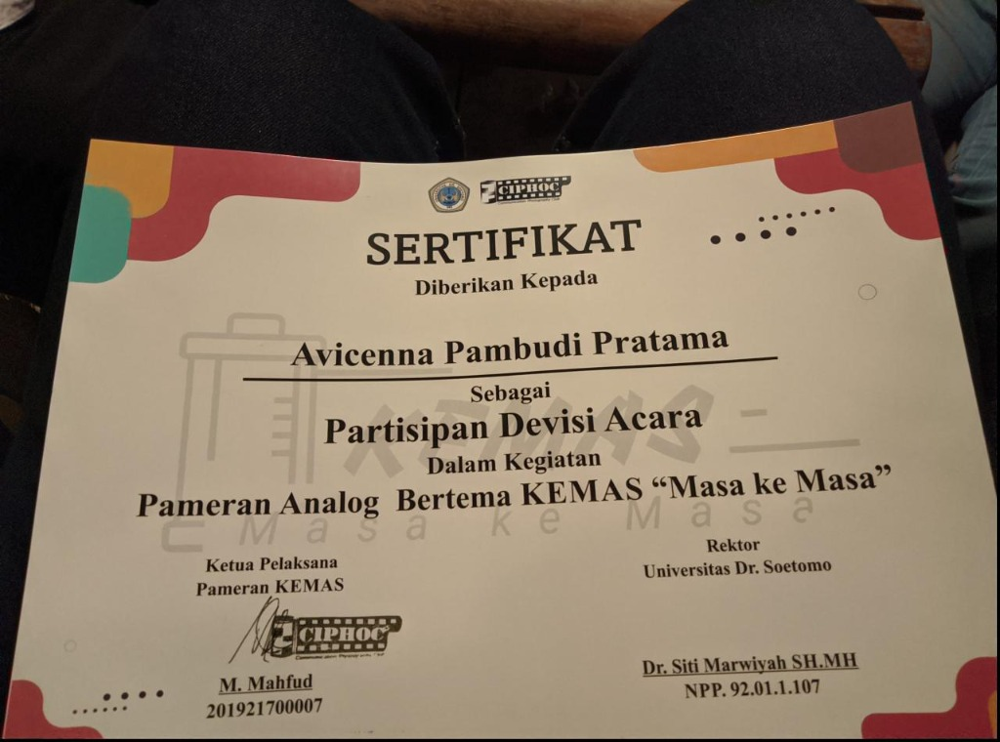
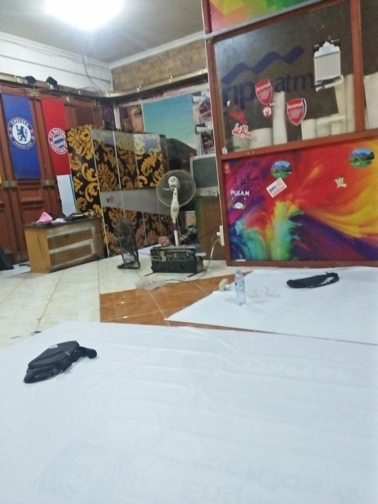
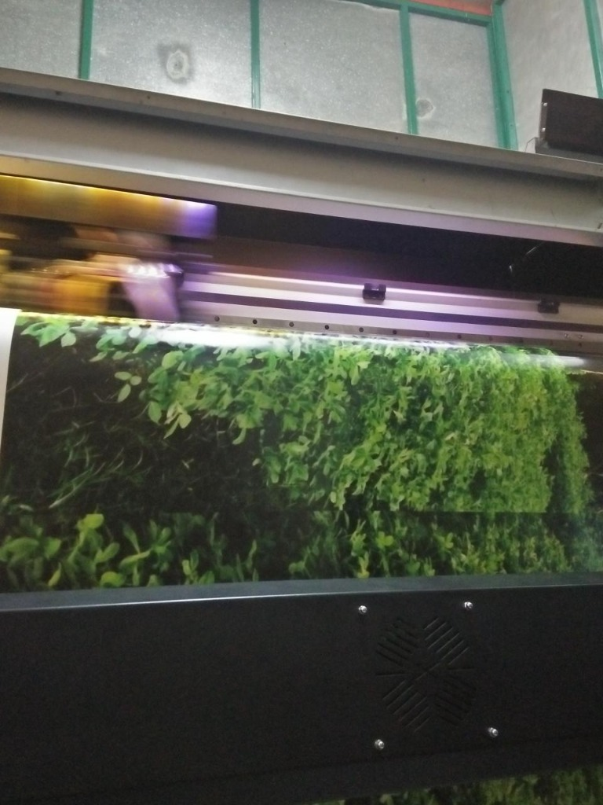

Lulusan Ilmu Komunikasi yang berfokus pada corporate communication, relasi media, dan pembuatan konten. Siap bekerja giat tanpa bayang drama, guna membuktikan puncak dari sebuah proses pada mereka yang pernah meremehkan.
Halo. Saya Avicenna. Saya percaya bahwa cerita memiliki kekuatan mutlak untuk merajut ide dan menggerakkan manusia. Perjalanan komunikasi saya diawali di Universitas Dr. Soetomo — tempat saya pertama kali melihat bagaimana kata yang dirangkai secara presisi mampu merombak perspektif dunia.
Mulai dari merumuskan berita di pusaran tenggat waktu yang mencekik, hingga turun gunung mendokumentasikan jantung budaya lokal... saya telah terasah untuk bertindak cepat, mempertahankan keakuratan yang tajam, dan menyajikan nilai fundamental dari segala hiruk-pikuk peristiwa yang ada.

Pengalaman Profesional
Tribunews Jatim & SuryaOnline Surabaya
Mar – Jun 2024
Dipercaya untuk merangkai dan mempublikasikan ragam artikel harian yang menyorot dunia seni, budaya, serta denyut acara di penjuru Jawa Timur. Selalu menggelar riset serta mengulik narasi narasumber demi berita yang faktual dan objektif — dan secara solid menembus rata-rata 15 rilis artikel tajam per minggu di bawah naungan tempo redaksi yang tiada henti.

Pengalaman Keorganisasian
Jafifest (KEMAS) · Universitas Dr. Soetomo
Nov 2023
Berada di garda depan visual sebagai komite dokumentasi pada festival budaya raksasa, Jafifest. Mengamankan bidikan fotografi krusial, mengeksekusi publikasi lini masa grafis, plus mengatur ritme teknis langsung di titik nol lapangan. Sebuah orkestrasi yang mendongkrak visibilitas eksibisi akbar ini di mata ratusan massa kampus dan khalayak umum.


Masa Inkubasi
Labiza Advertising · SMK Unitomo Surabaya
Jan 2020 – Apr 2020
Sebuah gerbang pertama menyeberang ke wilayah profesional. Mengarungi fase magang yang menempa fondasi kedisiplinan dan memperluas wawasan strategi penjenamaan (branding).
Ruang untuk inovasi dan tantangan korporasi selalu saya nantikan. Apabila Anda memegang kandidat posisi, peluang proyek, atau barangkali hanya sekadar undangan minum kopi maya, radar saya selalu menangkap sinyal kotak masuk Anda.
Kirim Transmisi